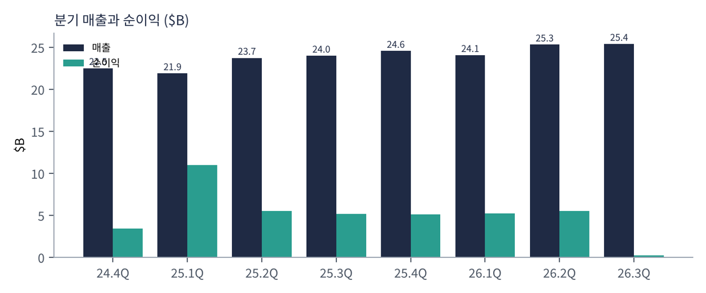
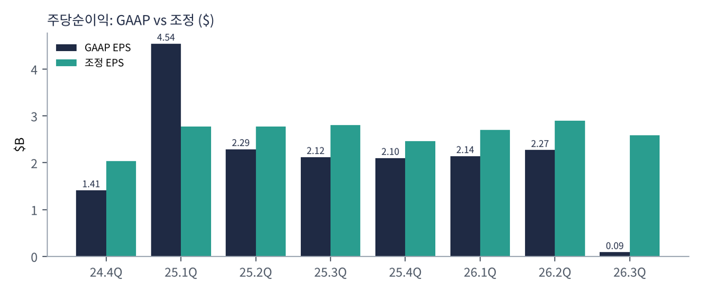
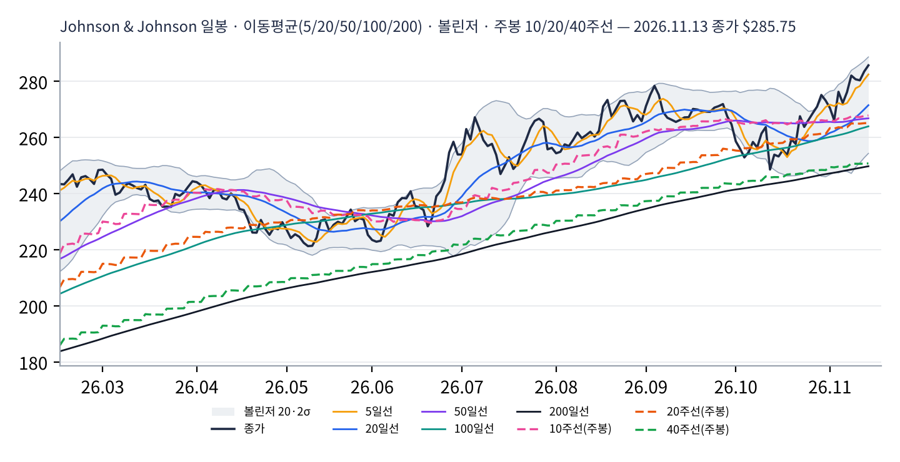
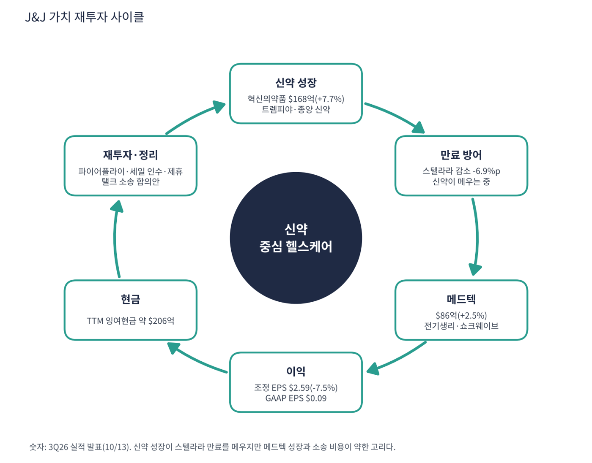

존슨앤드존슨(J&J)은 처방 신약(혁신의약품)과 의료기기(메드텍) 두 사업으로 이뤄진 미국 헬스케어 대기업이다. 이 보고서 시점의 매출은 연 $1,000억 수준이다. 신약이 매출의 3분의 2와 성장을 이끌지만 주력 약 스텔라라가 특허 만료로 줄어드는 중이고, 3Q26에는 탤크 소송 합의안 등 일회성 비용으로 GAAP 순이익이 95.9% 줄어든 회사다.
| 항목 | 내용 |
|---|---|
| 종목 | Johnson & Johnson (JNJ) · NYSE · 헬스케어 · 본사 미국 뉴저지주 뉴브런즈윅 |
| 밸류에이션 | PER 43.3배(GAAP TTM), 조정 기준 약 26.8배 · P/S 6.99배 (11/13 종가 $285.75) |
| 최근 분기(3Q26) | 매출 $254.0억(+5.9%), 순이익 $2.1억(-95.9%), GAAP EPS $0.09, 조정 EPS $2.59(-7.5%) |
| 부문(3Q) | 혁신의약품 $167.6억(+7.7%, 스텔라라 영향 -6.9%p), 메드텍 $86.4억(+2.5%) |
| 현금·부채 | 현금 등 약 $172억, 총차입금 약 $447억, TTM 잉여현금 약 $206억, TTM EBITDA 약 $338억(스캐너) |
| 가이던스(2026) | 매출 약 $1,012억(+7.4%), 조정 EPS $11.05~11.15(중간 $11.10, +2.9%) — 상향 |
| 다음 일정 | 2027년 가이던스와 정형외과(디퓨이) 분리 계획: 2026.12.8 투자자 행사. 4Q 실적 2027.1.26 예정(트레이딩뷰) |
| 직책 | 인물 | 역할·특징 |
|---|---|---|
| 회장·CEO | 호아킨 두아토 | 신약 중심 '집중된 포트폴리오' 전략을 이끈다 |
| 혁신의약품 총괄 | 톰 캐버너 | 제니퍼 타우버트 부사장 은퇴에 따라 혁신의약품 부문 월드와이드 회장에 임명 |
경영 스타일: '신약과 첨단 의료기기에 집중하고, 덜 맞는 사업은 분리한다'. 정형외과(디퓨이 신테스) 분리를 준비 중이고, 3Q에는 파이어플라이 바이오 인수와 세일 바이오메디신스 제휴를 일회성 비용으로 처리했다. 경영진은 3Q에 올해 가이던스를 또 올렸다.
다잘렉스, 카빅티, 테크베일리, 리브렌트, 트렘피야, 스프라바토, 캐플리타 등이 신약 성장을 이끌고 있다. 메드텍은 전기생리와 쇼크웨이브, 콘택트렌즈가 성장을 만든다. 로봇 수술 오타바는 허가를 받았다.
경영진은 3Q에 '집중된 포트폴리오의 가속'을 강조했다. 다발골수종 3상 양성 결과도 성과로 제시했다.
다음 실적발표는 세 가지 질문에 답하는 자리다.
1. 메드텍이 이번 분기에 개선되나?
2. 악재 '밸류에이션' 부담이 줄어드나?
3. 악재 '조정 EPS 역성장' 부담이 줄어드나?
한 줄 판정 규칙: 첫 질문의 메드텍이 좋아지면 약한 고리가 풀리고, 그렇지 않으면 현재 사이클의 약점이 그대로 남는다.
일정: 다음 발표일은 확인 필요(이번 분기 발표 후 일정 미확정). 위 현재값은 이 보고서의 기존 숫자다.
| 분기 | 매출 | 순이익 | EPS | 조정 EPS | 특이 사항 |
|---|---|---|---|---|---|
| 2024.4Q | $225.2억 | $34.3억 | 1.41 | 2.04 | |
| 2025.1Q | $218.9억 | $110.0억 | 4.54 | 2.77 | GAAP EPS 급등(원인 미확인) |
| 2025.2Q | $237.4억 | $55.4억 | 2.29 | 2.77 | |
| 2025.3Q | $239.9억 | $51.5억 | 2.12 | 2.80 | |
| 2025.4Q | $245.6억 | $51.2억 | 2.10 | 2.46 | |
| 2026.1Q | $240.7억 | $52.4억 | 2.14 | 2.70 | |
| 2026.2Q | $253.2억 | $55.3억 | 2.27 | 2.90 | |
| 2026.3Q | $254.0억 | $2.1억 | 0.09 | 2.59 | 탤크 합의안·인수 일회성 비용 |


흐름 요약: 분기 매출은 $219~254억으로 꾸준히 늘어 3Q26이 8분기 중 최대다. 조정 EPS는 $2.04~2.90 사이에서 움직이며 3Q26은 $2.59로 전년 동기($2.80) 대비 7.5% 줄었다. GAAP EPS는 분기마다 크게 흔들린다. 1Q25는 $4.54로 높았고 3Q26은 $0.09로 낮았다. 3Q26은 회사가 밝힌 대로 탤크 소송 합의안 충당, 파이어플라이 인수, 세일 제휴 비용 때문이다. 영업이익과 분기 설비투자는 이 자료에서 구하지 못해 표에서 뺐다.
| 부문 | 3Q26 매출 | 증감 | 비고 |
|---|---|---|---|
| 혁신의약품 | $167.6억 | +7.7% | 스텔라라 영향 -6.9%p. 트렘피야, 다잘렉스, 카빅티 등이 성장. 미국 +11.1%, 해외 +2.4% |
| 메드텍 | $86.4억 | +2.5% | 전기생리, 쇼크웨이브, 콘택트렌즈, 외상 성장. 아비오메드 둔화 |
신약이 성장을 만든다. 혁신의약품은 매출의 66%이고, 스텔라라 만료로 성장이 7%p가량 깎이는데도 +7.7% 성장했다. 메드텍은 성장이 느리고 해외 매출 성장도 낮다(해외 전체 +1.8%, 운영 기준).
J&J는 '집중된 포트폴리오'로 방향을 정했다.
| 축 | 최근 움직임 |
|---|---|
| 신약 | 종양, 면역, 신경과학. 다발골수종 3상 양성 |
| 메드텍 | 오타바 로봇 허가, 전기생리·쇼크웨이브 성장 |
| 구조 조정 | 정형외과 분리 계획(12/8 상세 공개 예정) |
| 소송 | 탤크 합의안 충당(3Q) |

| 이동평균 | 값 | 종가 대비 | 해석 |
|---|---|---|---|
| 5일선 | $282.51 | +1.1% | 고점 부근 |
| 20일선 | $271.55 | +5.2% | 상승 추세 |
| 50일선 | $266.86 | +7.1% | 상승 추세 |
| 100일선 | $264.01 | +8.2% | 상승 추세 |
| 200일선 | $249.79 | +14.4% | 현재가가 약 14% 위 |
주봉 흐름: 2025년 11월 $186~196 → 2026년 2월 $240대 → 4~5월 $221~235 → 6월 이후 $255~275 → 11/13 주 $288.1(52주 고점) 마감 $285.8. 모든 이동평균선이 상승 정렬이다.
| 규칙 | 기준 | 현재 값 | 신호 |
|---|---|---|---|
| 장기 추세 필터 | 종가 vs 200일선 | $285.75 > $249.79 | 매수 |
| 중장기 교차 | 50일선 vs 200일선 | $266.86 > $249.79 | 매수 |
| 단기 교차 | 20일선 vs 50일선 | $271.55 > $266.86 | 매수 |
| 돈키언 채널 | 55일 고가 $288.11 / 저가 $245.17 | 중간값 $266.64 위 | 매수 |
| 1개월 모멘텀 | 21거래일 수익률 | +12.8% (기준 $253.28) | 매수 |
| 3개월 모멘텀 | 63거래일 수익률 | +8.9% (기준 $262.37) | 매수 |
| 6개월 모멘텀 | 126거래일 수익률 | +26.0% (기준 $226.71) | 매수 |
| 12개월 모멘텀 | 252거래일 수익률 | +47.0% (기준 $194.39) | 매수 |
| 종합 (8개 평균) | +1.00 | 강한 매수 |
해석: 8개 신호가 모두 매수다. 다만 현재가가 200일선보다 약 14% 위에 있고 52주 고점 근처라 과열 구간이다. 14일 ATR $7.13 (2.5%).
| 가격 | 무엇이 바뀌나 | 의미 |
|---|---|---|
| $266.6 이탈 | 돈키언 중간값 | 55일 채널 매수 → 매도 |
| $253.3 이탈 | 1개월 기준가 | 1개월 모멘텀 매수 → 매도 |
| $249.8 이탈 | 200일선 | 장기 추세 필터 매도 |
| 구분 | 가격대 | 근거 |
|---|---|---|
| 저항 1 | $288 | 52주 고점(11/13) |
| 지지 1 | $267 ~ 272 | 20일선 $271.6, 50일선 $266.9 |
| 지지 2 | $245 ~ 250 | 55일 저점 $245, 200일선 $250 |
모든 신호가 매수지만 고점 추격은 위험하다. 20일선·50일선($267~272)까지 눌릴 때 계획 비중의 30%만 진입하고 종가 $255 이탈 시 손절한다. 1차 목표 $300은 내 가정(심리적 가격대), 2차 $320은 +12% 수준이다. 조건은 12/8 투자자 행사에서 2027 가이던스 확인이다.
| 악재 요인 | 내용 | 강도 |
|---|---|---|
| 조정 EPS 역성장 | 3Q 조정 EPS -7.5%, 올해 가이던스도 +2.9% | 중간~높음 |
| 스텔라라 만료 | 성장률을 약 6.9%p 깎는 중 | 중간 |
| 메드텍 둔화 | +2.5%, 해외 성장 낮음 | 중간 |
| 탤크 소송 | 합의안을 충당했지만 최종 확정 여부 확인 필요 | 중간 |
| 밸류에이션 | 52주 고점, 조정 PEG 약 10 | 높음 |
| 티커 | 회사 | PER(TTM) | PEG | P/S | EPS 성장(YoY) |
|---|---|---|---|---|---|
| JNJ | 존슨앤드존슨 | 26.8배 | 10.30 | 6.99배 | +3% |
| LLY | 일라이릴리 | 47.4배 | – | 14.75배 | +51% |
| ABBV | 애브비 | 50.8배 | – | 7.90배 | +338% |
| AMGN | 암젠 | 27.0배 | – | 6.54배 | +33% |
| MRK | 머크 | 150.9배 | – | 5.42배 | -87% |
| PFE | 화이자 | 41.3배 | – | 2.61배 | -59% |
JNJ의 PER·PEG·성장률은 조정 EPS 기준이고, 다른 종목은 트레이딩뷰 GAAP TTM이다. 머크·화이자·애브비는 일회성 비용·인수 영향으로 GAAP PER이 왜곡돼 있다.
비교 결론: JNJ는 GAAP 왜곡이 없는 조정 PER 26.8배로 암젠과 비슷하다. 성장이 낮아(조정 EPS +2.6%) PEG는 높지만 재무 안정성과 잉여현금이 강점이다.
J&J는 현금 창출이 안정적이고 재무도 탄탄하다. 현금 등 약 $172억, 총차입금 약 $447억이다.
| 지표 | 값 | 계산·출처 | 해석 |
|---|---|---|---|
| 현금 등 | 약 $172억 | 스캐너 | |
| 총차입금 | 약 $447억 | 스캐너 | 순부채 약 $275억 |
| TTM 잉여현금흐름 | 약 $206억 | 스캐너 | – |
| TTM EBITDA | 약 $338억 | 스캐너 | 순부채/EBITDA 약 0.8배 |
| 기준 | 값 | 비고 |
|---|---|---|
| P/S (TTM) | 6.99배 | TTM 매출 약 $993억(내 계산) |
| P/FCF | 약 33배 | 잉여현금 $206억 (내 계산) |
| 동종 | 애브비 7.9, 머크 5.4, 암젠 6.5, 화이자 2.6, 일라이릴리 14.8 | 11/13 스캐너 |
해석: 주가가 52주 고점 부근이라 잉여현금 수익률(3.0%)은 낮다. 스트레스 가정: P/FCF 25배면 약 $214 (-25%), 30배면 약 $257 (-10%), 38배면 약 $325 (+14%)이다(내 가정, 잉여현금 $206억 고정).
| 지표 | 값 | 판정 |
|---|---|---|
| PER (GAAP TTM) | 43.3배 | TTM EPS $6.59, 3Q 일회성 비용 포함 |
| PER (조정 TTM) | 26.8배 | 최근 4분기 조정 EPS 합 $10.65 (내 계산) |
| EV / EBITDA | 약 21.2배 | EV(차입금 $447억 − 현금 $172억 반영),154억, ÷ $338억 |
| 방식 | PER | EPS 성장률 | PEG | 판정 |
|---|---|---|---|---|
| 트레이딩뷰 (GAAP TTM) | 43.3배 | -36.4% | 산출 불가 | 일회성 비용으로 EPS 감소 |
| 조정 EPS 기준 (일회성 제외) | 26.8배 | +2.6% | 약 10.3 | 기준 초과 |
| 조정 TTM $10.65 ÷ 직전 TTM $10.38 | – | – | – | 직전: 4Q24 2.04 + 1Q25 2.77 + 2Q25 2.77 + 3Q25 2.80 |
| 회사 2026 조정 EPS 가이던스 성장률 +2.9% | 26.8배 | +2.9% | 약 9.2 | 기준 초과 내 계산 |
판정: 조정 PEG 약 10.3으로 기준(1.0) 크게 초과. 일회성 비용을 빼도 조정 EPS 성장이 +2.6%에 그쳐 성장 대비 배수가 비싸다. GAAP PEG는 EPS가 줄어 산출 불가다. 2027년 가이던스(12/8 발표 예정)가 성장률을 바꿀 수 있다.

J&J의 사이클은 신약 성장 → 이익·현금 → 인수·제휴로 파이프라인 보강이다. 스텔라라 만료와 메드텍 둔화, 소송이 약한 고리다.
| 고리 | 현재 숫자 | 고리 강도 | 약해지는 신호 |
|---|---|---|---|
| ① 신약 성장 | 혁신의약품 +7.7%(운영 +7.9%) | 강함 | 트렘피야·종양 신약 둔화 |
| ② 만료 방어 | 스텔라라 감소 -6.9%p | 진행 중 | 바이오시밀러 확대 |
| ③ 메드텍 | +2.5% | 약함 | 아비오메드 부진, 해외 중국 압박 |
| ④ 이익 | 조정 EPS $2.59(-7.5%) | 부진 | 인수 비용이 조정 EPS에도 포함 |
| ⑤ 현금 | TTM 잉여현금 약 $206억 | 강함 | 소송 합의금 지급 |
| ⑥ 재투자 | 파이어플라이 인수, 세일 제휴 | 비용 선반영 | 인수 비용 증가 |
구조: 강한 고리는 ①⑤, 약한 고리는 ②③④이다. 신약 모멘텀과 가이던스 상향에도 조정 EPS는 역성장이다.